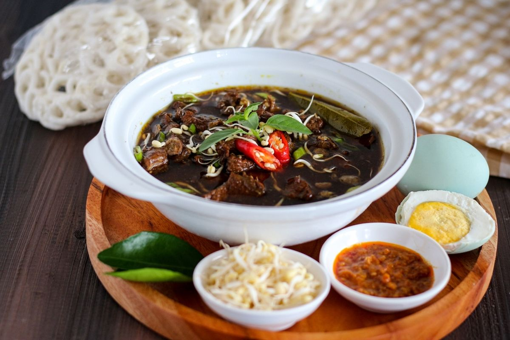

Resep Paling Populer
Resep-resep yang paling banyak dicoba dan disukai.
Galeri Masakan





Jelajahi ribuan resep masakan asli Indonesia yang lezat dan mudah dibuat.
Resep-resep yang paling banyak dicoba dan disukai.